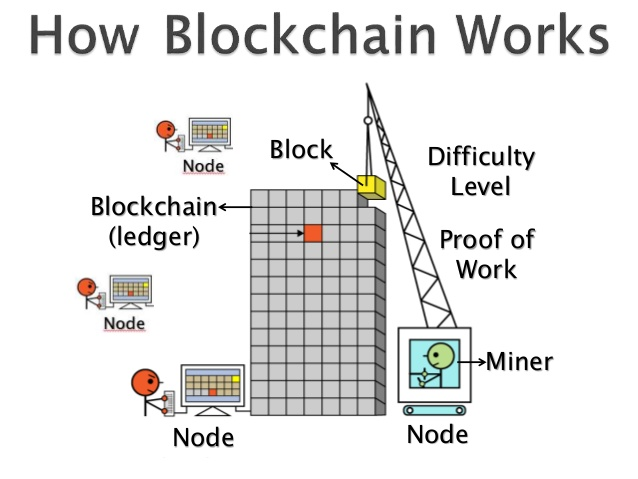

In order for a community maintained ledger to work one needs a way to ensure three types of integrity. Hereunder each of those is treated separately.

To make sure only the owner of an account is able draw from it, one needs a way to verify ownership using only the ledger itself. To this end a transaction in the ledger consists of three things. A public key of the account from which money is drawn, a public key of the account to which money is sent and an encoded message approving the transaction. This encoded message is encoded by the private key of the account owner and can be decoded by anyone using the public key that was registered as the sender in the ledger. This verification procedure is called a digital signature and is comparable to the authentication step of the https protocol. Note that the public key plays a dual role, it is both the account number itself as well as a way to verify the digital signature.
Due to the fact that encoding can only be done by the owner with his/her private key and decoding can be done by anyone using the public key everyone can check for him or herself that the one who drew upon an account with a certain public key has the corresponding private key.
One must only be able to draw from an account if there is a positive balance in it. To this end each payment from an account must reference an unspent payment to that account in the past. As we are considering a 'zero trust' system it is instrumental that everyone has his or her own copy of the entire ledger in order to verify whether this reference payment indeed exists. This way of safeguarding the integrity of transactions is called the transaction chain.
Even with the transaction chain and digital signature in place there is still no way of telling what the ordering of all transaction is. This makes the system vulnerable to the following attack: Eve can send money to Bob making use of a past transaction she got from Alice. She can send this to Bob's ledger who will in response send her the product or service they had agreed upon. Once she has received the product or service she can spend that same past transaction from Alice again, this time sending it to her own account. If she now starts broadcasting this new payment to the rest of the network, claiming she had made this transaction first, then there is no way for the rest of the network to tell which transaction occurred first. In case the network accepts the payment of Eve to herself the payment of Eve to Bob becomes invalid as it references an already spent transaction.
In order to prevent this kind of attack there must be some way of safeguarding the ordering of transactions. This is where the blockchain comes in.[152] In the blockchain transactions are grouped into blocks that are thought of as having happened at the same time. The chain of blocks then provides you with a chronology of the transactions.